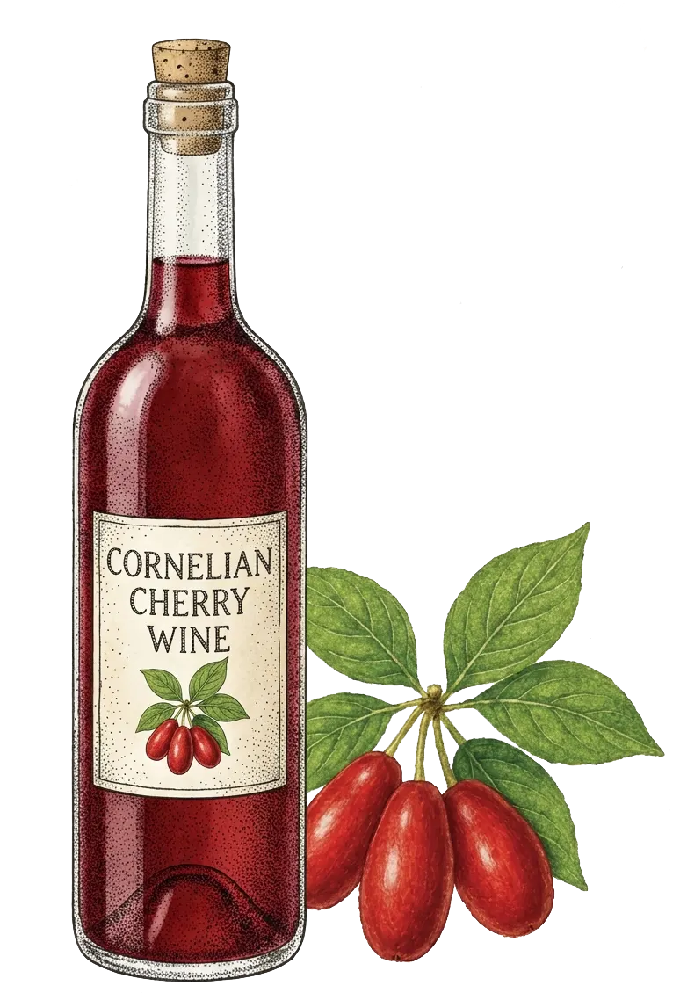
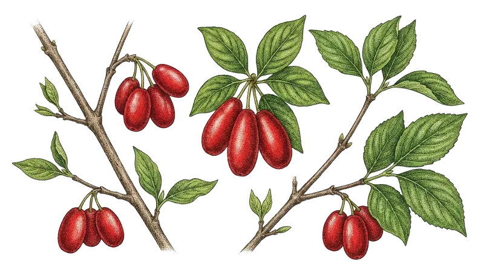
Drvar
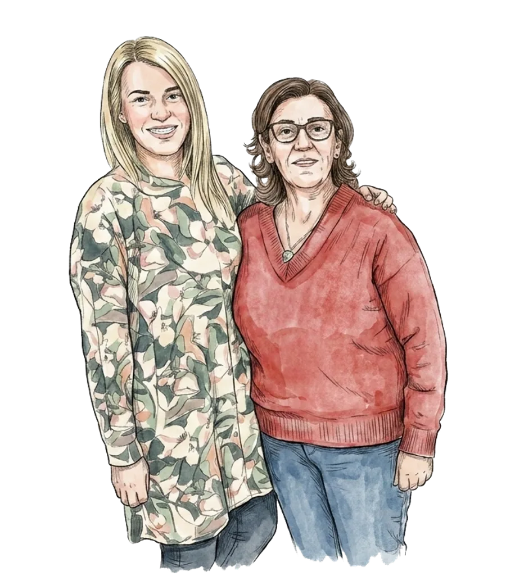
Od porodičnog recepta do brenda iz Drvara
Sve je počelo iz čiste ljubavi prema prirodi — kao hobi mame Olivere, koju svi zovu Lela: od drenjina je pravila poklone za prijatelje. Godine 2010. odlučili smo da ono što je naša kuća radila za sebe počnemo raditi i za druge — tako je rođeno Domaćinstvo Jović.
Domaćinstvo vode mama Lela i kćerka Suzana, uz nezamjenljivu pomoć oca i brata. Svaka tegla pekmeza, svaka boca rakije i svaki poklon paket prođu kroz naše ruke — od grane do vaše trpeze.
Najponosniji smo na naš mućeni pekmez od drenjine: ne kuva se, nego se muti puna tri sata, ručno i bez ijednog konzervansa — po receptu koji se u porodici prenosi generacijama. Danas taj pekmez nosi i oznaku zaštićenog geografskog porijekla — pečat da je pravljen baš ovdje i baš ovako.
A Suzana je najbolji dokaz da se selo i karijera ne isključuju: prošla je put od čistačice, preko direktorice, do savjetnice ministra. Kada je jednom preko noći ostala bez posla, s fakultetskom diplomom u rukama preuzela je štalu i krave — i tih devet mjeseci, kaže, naučilo ju je vojničkoj disciplini i ranom ustajanju. Zato je i danas svako jutro zateknete u domaćinstvu, a na proljeće na imanje stižu i nove junice. O nama je snimljeno više televizijskih priča — pogledajte ih niže na stranici.
„Ako niste bili kod porodice Jović — kao da niste ni bili u Drvaru.“
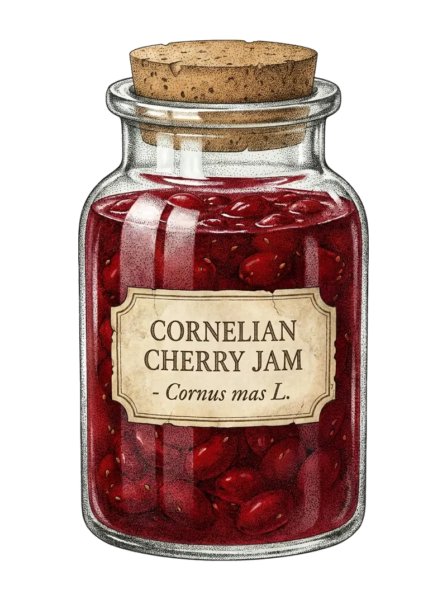
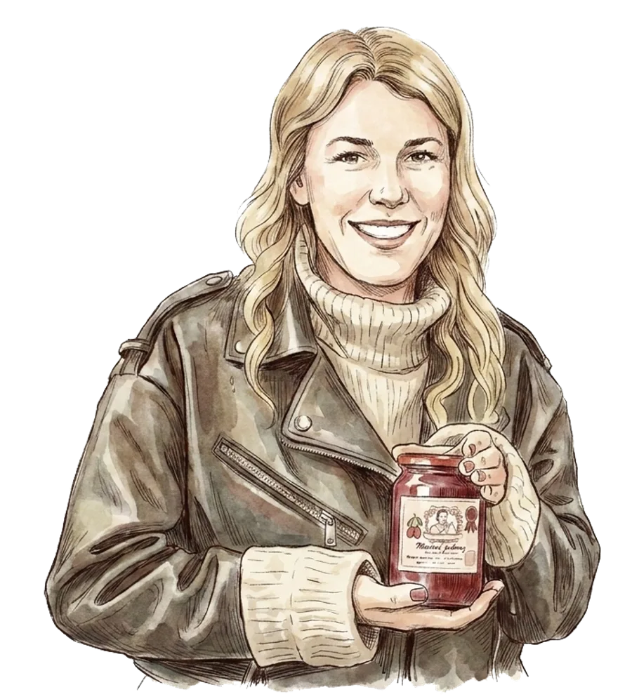
Dren je darežljivo drvo — cvjeta prvi, a rađa posljednji. Nauči te strpljenju, a strpljenje je pola našeg zanata.— Porodica Jović
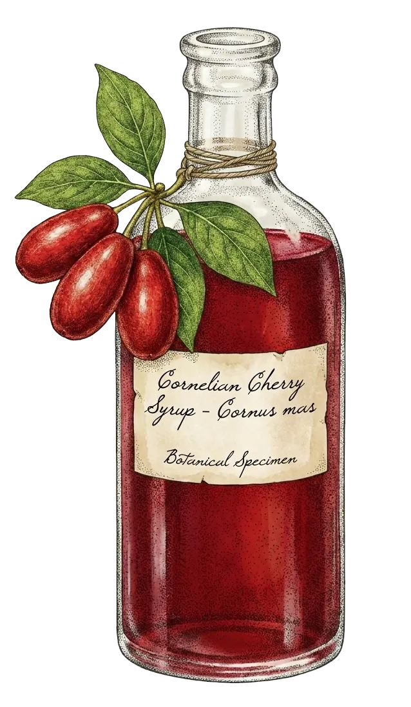
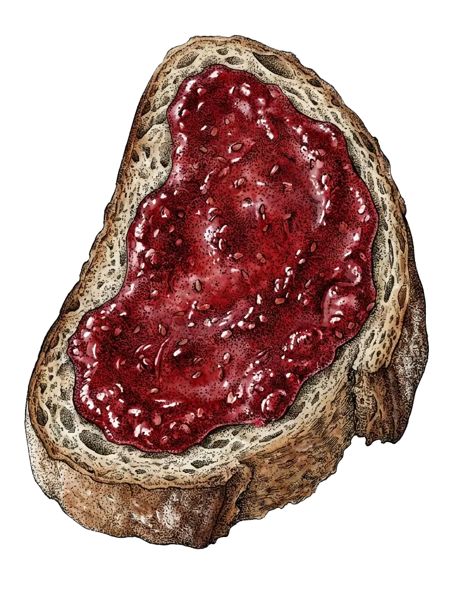
Od grane do tegle — sve ručno
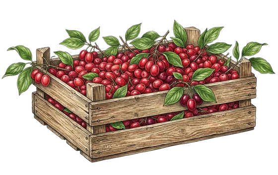
1. Berba
Svake jeseni ručno beremo drenjine na obroncima oko Drvara — samo zrele, jarkocrvene plodove.
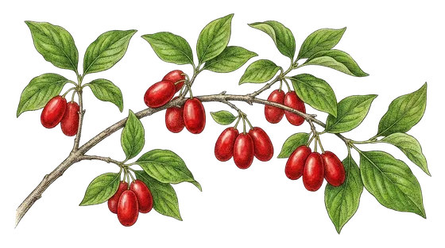
2. Prerada
Pekmez se muti tri sata bez kuvanja, rakija se peče u bakrenom kazanu, a turšija i liker zru polako — koliko im treba.
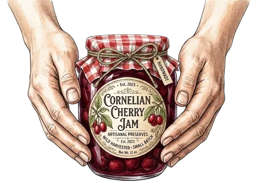
3. Pakovanje
Svaku teglu i bocu ručno punimo, mjerimo i pakujemo — pa šaljemo poštom na vašu adresu, kao da šaljemo rodbini.
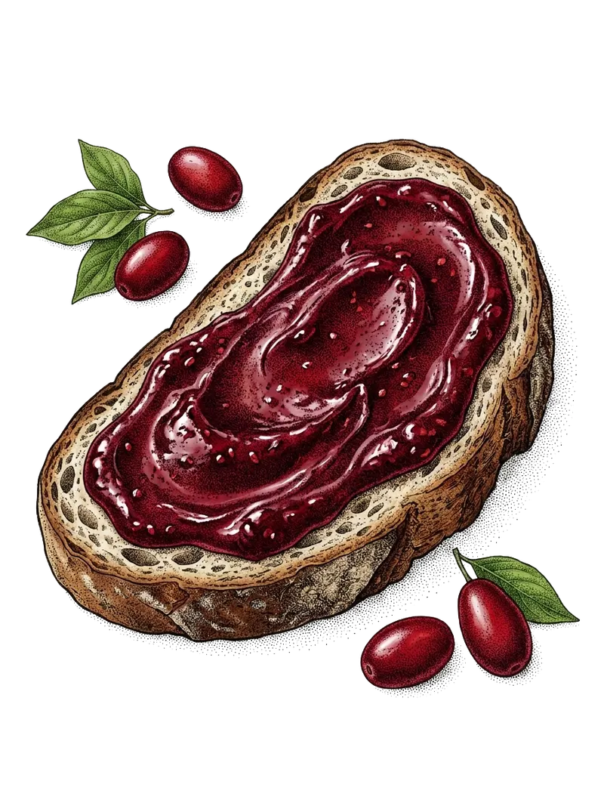
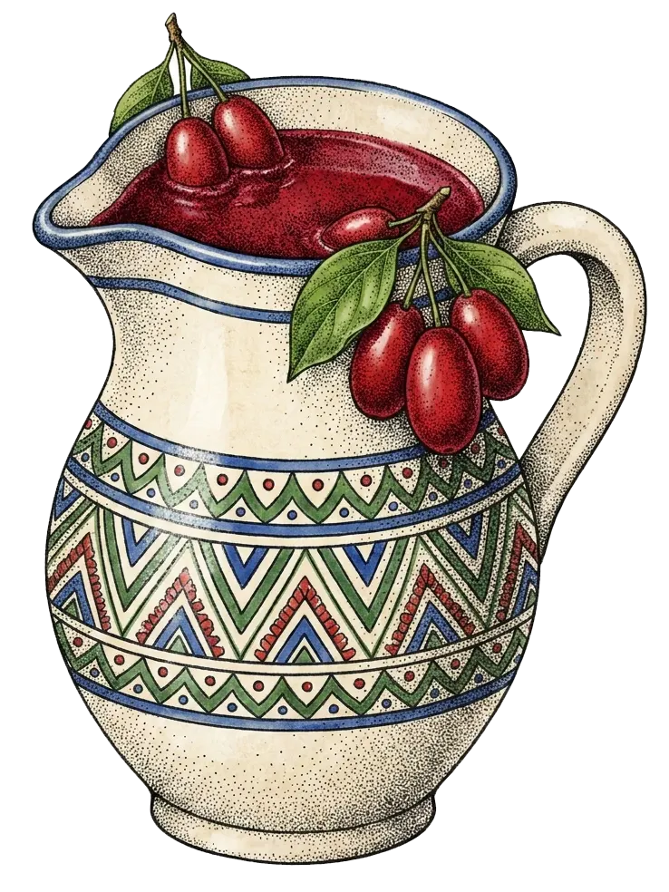
Petnaest godina, jedna ljubav
Osnivamo Domaćinstvo Jović i prvi put iznosimo naše proizvode pred kupce.
Mućeni pekmez od drenjine postaje naš zaštitni znak — priča o pekmezu koji se ne kuva širi se od usta do usta.
Redovni smo učesnici manifestacije „Dani drvarske drenjine" — naša tezga se pamti i traži.
Pakete šaljemo širom BiH, u Srbiju, Crnu Goru i Makedoniju, a radimo i na redovnoj dostavi za Hrvatsku. Potražnja je tolika da se uvijek traži — „tegla više“.
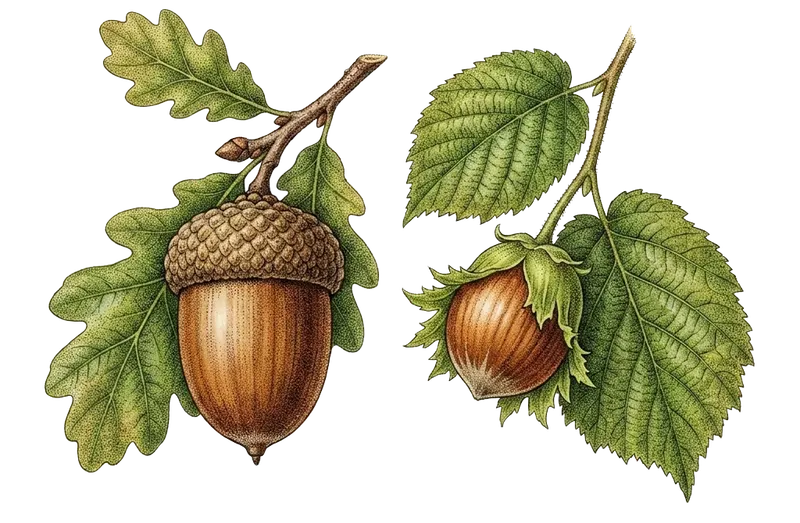

Pogledajte nas na djelu
Drvar, drenjina i naši proizvodi — kroz objektiv televizijskih ekipa i gostiju.
Nađite nas na mapi
Mlinski put 185, Drvar selo — par kilometara od centra Drvara, uz turističke putokaze koji vode pravo do imanja. Vrata su vam uvijek otvorena.